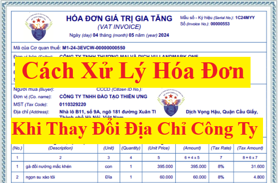

Hướng dẫn cách xử lý hóa đơn khi thay đổi địa chỉ trên hóa đơn điện tử theo Nghị định 70/2025/NĐ-CP sửa đổi Nghị định 123/2020/NĐ-CP và các công văn hướng dẫn mới nhất
Tổng quan: Khi thay đổi địa chỉ công ty thì:
Hóa đơn phải ghi theo địa chỉ mới kể từ ngày có giấy chứng nhận doanh nghiệp thay đổi
Cụ thể các quy định và hướng dẫn liên quan đến việc thay đổi địa chỉ trên hóa đơn như sau:
Theo điểm d Khoản 11 Điều 1 Nghị định 70/2025/NĐ-CP có hiệu lực từ ngày 01/06/2025 Sửa đổi, bổ sung Khoản 4 Điều 15 của Nghị định 123/2020/NĐ-CP quy định, đăng ký, thay đổi nội dung đăng ký sử dụng hóa đơn điện tử thì:
Theo điểm d Khoản 11 Điều 1 Nghị định 70/2025/NĐ-CP có hiệu lực từ ngày 01/06/2025 Sửa đổi, bổ sung Khoản 4 Điều 15 của Nghị định 123/2020/NĐ-CP quy định, đăng ký, thay đổi nội dung đăng ký sử dụng hóa đơn điện tử thì:
Điều 15. Đăng ký, thay đổi nội dung đăng ký sử dụng hóa đơn điện tử
4. Trường hợp có thay đổi thông tin đã đăng ký sử dụng hóa đơn điện tử tại khoản 1 Điều này, doanh nghiệp, tổ chức kinh tế, tổ chức khác, hộ kinh doanh, cá nhân kinh doanh thực hiện thay đổi thông tin như sau:
a) Trường hợp người nộp thuế thay đổi thông tin sử dụng hóa đơn điện tử do thay đổi thông tin về người đại diện theo pháp luật; đại diện hộ kinh doanh, cá nhân kinh doanh, thành viên góp vốn, chủ sở hữu thì trình tự thủ tục thực hiện theo quy định tại khoản 1a Điều này.
b) Trường hợp người nộp thuế thay đổi thông tin sử dụng hóa đơn điện tử không thuộc quy định tại điểm a khoản này, Cổng thông tin điện tử của Tổng cục Thuế gửi yêu cầu đề nghị người nộp thuế xác nhận qua địa chỉ thư điện tử hoặc điện thoại của chủ doanh nghiệp hoặc người đại diện theo pháp luật theo thông tin trong hồ sơ đăng ký thuế.
Doanh nghiệp, tổ chức kinh tế, tổ chức khác, hộ kinh doanh, cá nhân kinh doanh sau khi thay đổi thông tin thì gửi lại cơ quan thuế thông tin đã thay đổi theo Mẫu số 01/ĐKTĐ-HĐĐT Phụ lục IA ban hành kèm theo Nghị định này qua Cổng thông tin điện tử của Tổng cục Thuế hoặc qua tổ chức cung cấp dịch vụ hóa đơn điện tử, trừ trường hợp ngừng sử dụng hóa đơn điện tử theo quy định tại khoản 1 Điều 16 Nghị định này. Cổng thông tin điện tử của Tổng cục Thuế tiếp nhận mẫu đăng ký thay đổi thông tin và cơ quan thuế thực hiện theo quy định tại khoản 2 Điều này.
c) Trường hợp công ty mẹ cần khai thác dữ liệu của các chi nhánh, đơn vị phụ thuộc thì thông báo tới cơ quan thuế quản lý trực tiếp công ty mẹ theo Mẫu số 01/ĐKTĐ-HĐĐT Phụ lục IA ban hành kèm theo Nghị định này.
Công văn số 47287/CTHN-TTHT ngày 21 tháng 8 năm 2024 của Cục Thuế TP Hà Nội V/v chính sách thuế về hóa đơn thì:
Trường hợp Công ty thay đổi địa chỉ trụ sở chính đã được Sở Kế hoạch và Đầu tư thành phố Hà Nội cấp Giấy chứng nhận đăng ký doanh nghiệp (đăng ký thay đổi lần thứ 2 ngày 03/7/2024) thì kể từ ngày 03/7/2024 khi bán hàng hóa, cung cấp dịch vụ, Công ty phải lập hóa đơn để giao cho người mua và trên hóa đơn phải thể hiện tên, địa chỉ, mã số thuế của người bán theo đúng tên, địa chỉ, mã số thuế ghi tại giấy chứng nhận đăng ký doanh nghiệp (đăng ký thay đổi lần thứ 2) theo quy định tại Khoản 4 Điều 10 Nghị định 123/2020/NĐ-CP ngày 19/10/2023 của Chính phủ.
Sau khi Công ty hoàn tất thủ tục thay đổi địa chỉ trụ sở chính thì phải gửi mẫu số 01/ĐKTĐ-HĐĐT tới cơ quan thuế để thay đổi địa chỉ Công ty trên hóa đơn điện tử trước khi xuất hóa đơn cho người mua theo quy định tại Khoản 4 Điều 15 Nghị định 123/2020/NĐ-CP.
Trường hợp hóa đơn điện tử đã lập theo Nghị định số 123/2020/NĐ-CP, đã gửi cho người mua sau đó phát hiện sai sót về địa chỉ người bán, các nội dung khác không sai sót thì Công ty thực hiện xử lý hóa đơn có sai sót theo hướng dẫn khoản 2 Điều 19 Nghị định 123/2020/NĐ-CP nêu trên.
Vậy là: Khi doanh nghiệp thay đổi địa chỉ thì cần xử lý hóa đơn điện tử như sau:
Sau khi hoàn tất thủ tục thay đổi địa chỉ trụ sở với Sở Kế hoạch và Đầu tư (đã được Sở Kế hoạch và Đầu tư cấp Giấy chứng nhận đăng ký doanh nghiệp (đăng ký thay đổi lần thứ ...) thì doanh nghiệp cần thực hiện:
+ Gửi mẫu số 01/ĐKTĐ-HĐĐT tới cơ quan thuế để thay đổi địa chỉ Công ty trên hóa đơn điện tử trước khi xuất hóa đơn cho người mua theo quy định tại điểm d Khoản 11 Điều 1 Nghị định 70/2025/NĐ-CP có hiệu lực từ ngày 01/06/2025 Sửa đổi, bổ sung Khoản 4 Điều 15 của Nghị định 123/2020/NĐ-CP
Trong thời gian 01 ngày làm việc kể từ ngày nhận được đăng ký sử dụng hóa đơn điện tử, cơ quan thuế có trách nhiệm gửi thông báo điện tử theo Mẫu số 01/TB-ĐKĐT Phụ lục IB ban hành kèm theo Nghị định 123/2020/NĐ-CP qua tổ chức cung cấp dịch vụ hóa đơn điện tử hoặc gửi thông báo điện tử trực tiếp đến doanh nghiệp, tổ chức kinh tế, tổ chức khác, hộ, cá nhân kinh doanh về việc chấp nhận hoặc không chấp nhận đăng ký sử dụng hóa đơn điện tử.
+ Khi bán hàng hóa, cung cấp dịch vụ, Công ty phải lập hóa đơn để giao cho người mua và trên hóa đơn phải thể hiện tên, địa chỉ, mã số thuế của người bán theo đúng tên, địa chỉ, mã số thuế ghi tại giấy chứng nhận đăng ký doanh nghiệp (đã đăng ký thay đổi)
(Hóa đơn điện tử phải ghi theo địa chỉ mới kể từ ngày được cấp giấy chứng nhận doanh nghiệp thay đổi)
Lưu ý:
+ Mẫu số 01/ĐKTĐ-HĐĐT có trên phần mềm lập hóa đơn điện tử => Doanh nghiệp có thể thực hiện kê khai trực tiếp trên phần mềm hóa đơn điện tử mà DN đang sử dụng rồi ký nộp trực tuyến qua mạng
(Trước khi kê khai thì công ty bạn cần đăng nhập vào phần mềm hóa đơn đơn điện tử => Sau đó tiến hành chỉnh sửa/cập nhật địa chỉ mới đã thay đổi)

Cụ thể, Các bước thực hiện trên phần mềm hóa đơn điện tử như sau:
Bước 1: Đăng nhập vào tài khoản hóa đơn điện tử của công ty
Bước 2: Cập nhật (chỉnh sửa) lại địa chỉ công ty theo địa chỉ mới
Bước 3: Lập Tờ khai thay đổi thông tin sử dụng hóa đơn điện tử và ký gửi lên cơ quan thuế
Bước 4: Theo dõi kết quả nộp tờ khai (để biết đã được CQT chấp nhận thông tin thay đổi hay chưa)
+ Các bạn có thể nhờ bên cung cấp dịch vụ hóa đơn điện tử cho công ty bạn để hỗ trợ thực hiện các thủ tục trên
+ Doanh nghiệp không cần phải tạo mẫu hóa đơn mới => Hóa đơn sẽ có địa chỉ mới sau khi doanh nghiệp gửi đăng ký thay đổi thông tin hóa đơn được cơ quan thuế duyệt
+ Khi tờ khai đăng ký thay đổi thông tin đã được cơ quan thuế chấp nhận thì mới xuất hóa đơn theo địa chỉ mới
Công ty đào tạo Kế Toán Diệu Tâm mời các bạn tham khảo thêm:
Cách xử lý hóa đơn điện tử sai địa chỉ người mua theo Nghị định 70/2025
Dưới đây, Kế Toán Diệu Tâm xin được gửi tới các bạn nội dung chi tiết của Công văn số 47287/CTHN-TTHT và mẫu số 01/ĐKTĐ-HĐĐT theo Nghị định 70/2025/NĐ-CP
1. Công văn số 47287/CTHN-TTHT ngày 21 tháng 8 năm 2024 của Cục Thuế TP Hà Nội hướng dẫn về xử lý hóa đơn điện tử khi thay đổi địa chỉ trên hóa đơn:
Kính gửi: Công ty TNHH Blue Pearing Việt Nam (Địa chỉ: số 242 đường Âu Cơ, Phường Quảng An, Quận Tây Hồ, TP Hà Nội - MST: 0110163695) Trả lời công văn số 10/2024/BPVN ngày 12/7/2024 của Công ty TNHH Blue Pearing Việt Nam (sau đây gọi tắt là “Công ty”) vướng mắc về xuất hóa đơn trong thời gian thay đổi địa chỉ kinh doanh, Cục Thuế TP Hà Nội có ý kiến như sau: - Căn cứ Nghị định số 123/2020/NĐ-CP ngày 19/10/2020 của Chính phủ quy định về hóa đơn, chứng từ. + Tại Khoản 1 Điều 4 quy định nguyên tắc lập, quản lý, sử dụng hóa đơn chứng từ: “Điều 4. Nguyên tắc lập, quản lý, sử dụng hóa đơn, chứng từ 1. Khi bán hàng hóa, cung cấp dịch vụ, người bán phải lập hóa đơn để giao cho mười mua (bao gồm cả các trường hợp hàng hóa, dịch vụ dùng để khuyến mại, quảng cáo, hàng mẫu; hàng hóa, dịch vụ dùng để cho, biếu, tặng, trao đổi, trả thay lương cho người lao động và tiêu dùng nội bộ (trừ hàng hóa luân chuyển nội bộ để tiếp tục quá trình sản xuất); xuất hàng hóa dưới các hình thức cho vay, cho mượn hoặc hoàn trả hàng hóa) và phải ghi đầy đủ nội dung theo quy định tại Điều 10 Nghị định này, trường hợp sử dụng hóa đơn điện tử thì phải theo định dạng chuẩn dữ liệu của cơ quan thuế theo quy định tại Điều 12 Nghị định này.” + Tại Điều 10 quy định nội dung của hóa đơn: “Điều 10. Nội dung của hóa đơn … 4. Tên, địa chỉ, mã số thuế của người bán Trên hóa đơn phải thể hiện tên, địa chỉ, mã số thuế của người bán theo đúng tên, địa chỉ, mã số thuế ghi tại giấy chứng nhận đăng ký doanh nghiệp, giấy chứng nhận đăng ký hoạt động chi nhánh, giấy chứng nhận đăng ký hộ kinh doanh, giấy chứng nhận đăng ký thuế, thông báo mã số thuế, giấy chứng nhận đăng ký đầu tư, giấy chứng nhận đăng ký hợp tác xã. …” + Tại Điều 11 quy định hóa đơn được khởi tạo từ máy tính tiền có kết nối chuyển dữ liệu với cơ quan thuế. + Tại Khoản 4 Điều 15 quy định, đăng ký, thay đổi nội dung đăng ký sử dụng hóa đơn điện tử: “Điều 15. Đăng ký, thay đổi nội dung đăng ký sử dụng hóa đơn điện tử 4. Trường hợp có thay đổi thông tin đã đăng ký sử dụng hóa đơn điện tử tại khoản 1 Điều này, doanh nghiệp, tổ chức kinh tế, tổ chức khác, hộ, cá nhân kinh doanh thực hiện thay đổi thông tin và gửi lại cơ quan thuế theo Mẫu số 01/ĐKTĐ-HĐĐT Phụ lục IA ban hành kèm theo Nghị định này qua Cổng thông tin điện tử của Tổng cục Thuế hoặc qua tổ chức cung cấp dịch vụ hóa đơn điện tử, trừ trường hợp ngừng sử dụng hóa đơn điện tử theo quy định tại khoản 1 Điều 16 Nghị định này. Cổng thông tin điện tử của Tổng cục Thuế tiếp nhận mẫu đăng ký thay đổi thông tin và Cơ quan Thuế thực hiện theo quy định tại khoản 2 Điều này.” + Tại khoản 2 Điều 19 quy định xử lý hóa đơn có sai sót: “Điều 19. Xử lý hóa đơn có sai sót ....2. Trường hợp hóa đơn điện tử có mã của cơ quan thuế hoặc hóa đơn điện tử không có mã của cơ quan thuế đã gửi cho người mua mà người mua hoặc người bán phát hiện có sai sót thì xử lý như sau: a) Trường hợp có sai sót về tên, địa chỉ của người mua nhưng không sai mã số thuế, các nội dung khác không sai sót thì người bán thông báo cho người mua về việc hóa đơn có sai sót và không phải lập lại hóa đơn. Người bán thực hiện thông báo với cơ quan thuế về hóa đơn điện tử có sai sót theo Mẫu số 04/SS-HĐĐT Phụ lục IA ban hành kèm theo Nghị định này, trừ trường hợp hóa đơn điện tử không có mã của cơ quan thuế có sai sót nêu trên chưa gửi dữ liệu hóa đơn cho cơ quan thuế. b) Trường hợp có sai: mã số thuế; sai sót về số tiền ghi trên hóa đơn, sai về thuế suất, tiền thuế hoặc hàng hóa ghi trên hóa đơn không đúng quy cách, chất lượng thì có thể lựa chọn một trong hai cách sử dụng hóa đơn điện tử như sau: …” Căn cứ các quy định trên, trường hợp Công ty thay đổi địa chỉ trụ sở chính đã được Sở Kế hoạch và Đầu tư thành phố Hà Nội cấp Giấy chứng nhận đăng ký doanh nghiệp (đăng ký thay đổi lần thứ 2 ngày 03/7/2024) thì kể từ ngày 03/7/2024 khi bán hàng hóa, cung cấp dịch vụ, Công ty phải lập hóa đơn để giao cho người mua và trên hóa đơn phải thể hiện tên, địa chỉ, mã số thuế của người bán theo đúng tên, địa chỉ, mã số thuế ghi tại giấy chứng nhận đăng ký doanh nghiệp (đăng ký thay đổi lần thứ 2) theo quy định tại Khoản 4 Điều 10 Nghị định 123/2020/NĐ-CP ngày 19/10/2023 của Chính phủ. Sau khi Công ty hoàn tất thủ tục thay đổi địa chỉ trụ sở chính thì phải gửi mẫu số 01/ĐKTĐ-HĐĐT tới cơ quan thuế để thay đổi địa chỉ Công ty trên hóa đơn điện tử trước khi xuất hóa đơn cho người mua theo quy định tại Khoản 4 Điều 15 Nghị định 123/2020/NĐ-CP. Trường hợp hóa đơn điện tử đã lập theo Nghị định số 123/2020/NĐ-CP, đã gửi cho người mua sau đó phát hiện sai sót về địa chỉ người bán, các nội dung khác không sai sót thì Công ty thực hiện xử lý hóa đơn có sai sót theo hướng dẫn khoản 2 Điều 19 Nghị định 123/2020/NĐ-CP nêu trên. Đề nghị Công ty căn cứ các quy định của pháp luật được trích dẫn nêu trên và đối chiếu với tình hình thực tế của đơn vị để thực hiện đúng theo quy định. Trong quá trình thực hiện chính sách thuế nếu còn vướng mắc, Công ty có thể tham khảo các văn bản hướng dẫn của Cục Thuế TP Hà Nội được đăng tải trên website http://hanoi.gdt.gov.vn hoặc liên hệ với Phòng Thanh tra - Kiểm tra thuế số 1 để được hỗ trợ giải quyết. Cục Thuế TP Hà Nội trả lời để Công ty TNHH Blue Pearing Việt Nam được biết và thực hiện./.
|
2. Mẫu số 01/ĐKTĐ-HĐĐT tờ khai Đăng ký/thay đổi thông tin sử dụng hóa đơn điện được ban hành kèm theo Nghị định 70/2025/NĐ-CP (Mẫu này có hiệu lực từ ngày 01/06/2025, Thay thế Mẫu số 01/ĐKTĐ-HĐĐT ban hành kèm theo Nghị định 123/2020/NĐ-CP)
|
Mẫu số: 01ĐKTĐ/HĐĐT
CỘNG HÒA XÃ HỘI CHỦ NGHĨA VIỆT NAM
Độc lập - Tự do - Hạnh phúc TỜ KHAI Đăng ký/thay đổi thông tin sử dụng hóa đơn điện tử
¨ Đăng ký mới
¨ Thay đổi thông tin
Chúng tôi cam kết hoàn toàn chịu trách nhiệm trước pháp luật về tính chính xác, trung thực của nội dung nêu trên và thực hiện theo đúng quy định của pháp luật./.
|
|||||||||||||||||||||||||||||||||||||||||||||||||||||||||||||||||||||||||||||||||||||||||||||||||||||||||||||||||||||||||||||||||||||||||||||||||||||||||||||||||||||||||||||||||||||||||||||||||||||||||||||||||||||||||||||||||||||||||||||||||||||||||||||||||||||||||||||||||||||||||||||||||||||||||||||||||||||||||||||||||||||||||||||||||||||||||||||||||||||||||||||||||||||||||||||||||